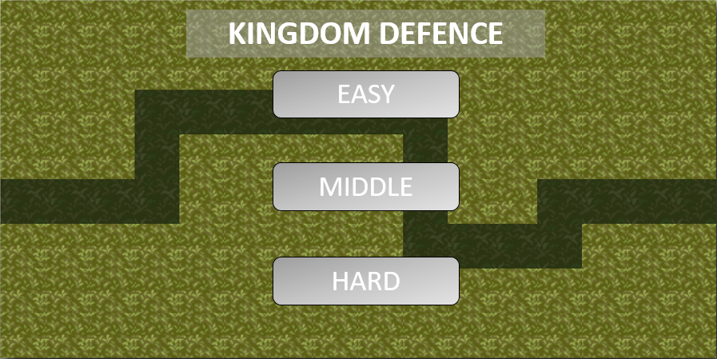
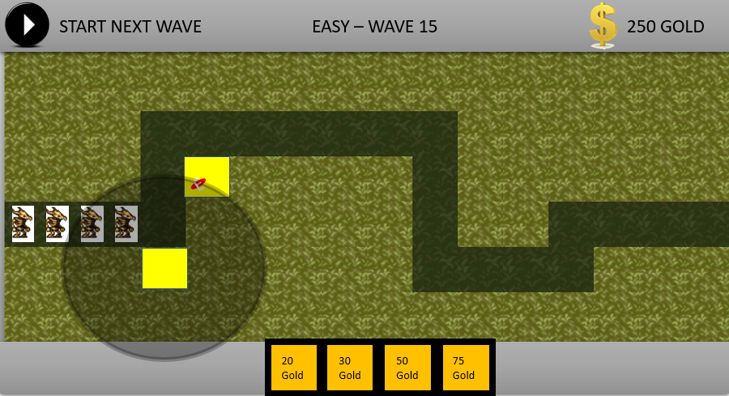
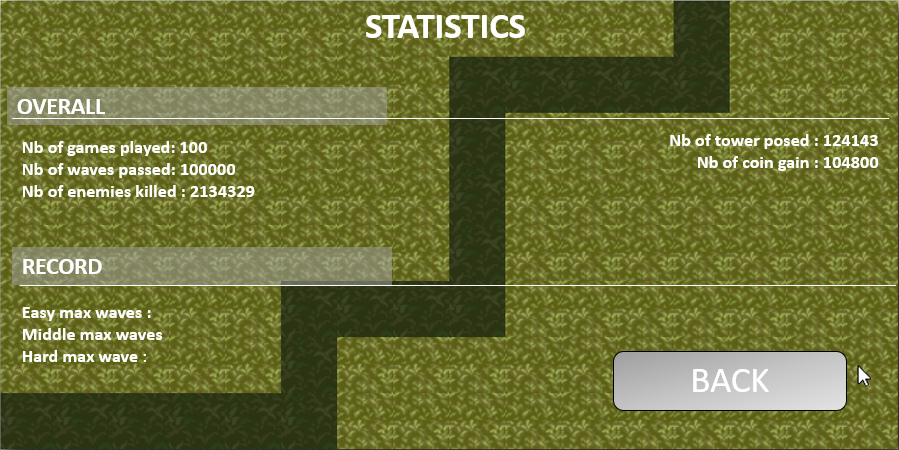

Maquette visuelle de votre projet
Par Benjamin, Hugo & Daniel, le 01/04/2022
Présentation de nos maquettes :
Pour commencer, nous pensons faire une page d'accueil, avec 3 options à choix :
- Un boutton "play" qui va rediriger vers la page suivante pour lancer le jeu
- Un boutton "statistics" pour retrouver des chiffres sur le joueurs, tels que le nombre de parties jouées, le nombre d'ennemis tués, etc.
- Un boutton "quit" pour fermer l'application.
En sélectionnant "play", nous arrivons ensuite sur la page de sélection de la difficulté, soit facile, moyen ou difficle. Plus la difficulté est élevée, plus les manches seront difficiles à passer, et les monstres plus difficiles à vaincre.
Maquette pour la partie jeu en soit, à voir plus en détail dans les mockups. Globalement, nous retrouvons une carte au milieu, avec un tracé que les monstres suivent, une barre d'action au sommet pour lancer un niveau, voir la manche actuelle et voir le solde d'argent. En bas, nous retrouverons les différentes tourelles de défense à placer.
Et finalement, une page statistiques qui va afficher les informations sur le joueur, le but étant de comparer son score avec ses amis :)
